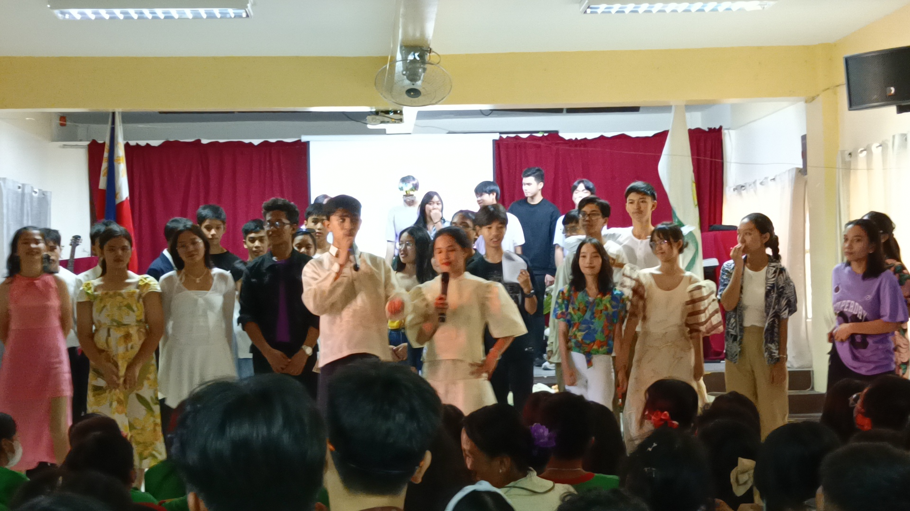

> This is our presentation about CHA CHA, it was a very fun experience dancing in front of a large crowd. This PT is also collabed with ICT.
> [Not full video because I cannot publish websites with large files
（；´д｀）ゞ ]
My name is Derrick Manzo R. Nieva. I am a student of Las Pinas Science High School who strives to work my way into a long-term occupation as a defense attorney. As such, I strive to do my best in the many things I must see to. This website is dedicated to my Grade 9 ICT class, and serves as my online portfolio for the many tasks and occurrences I've gone through this past school year.
>This is a picture of me making my first website for Mrs. Uminga's ICT Class whereas this will be our 1st PT in ICT. This taught me the basics of HTML (Hyper Text Markup Language) and how to convert my text file into a working HTML based website.
These are the classroom officers of Grade-9 Family, they are:
> This is a picture of me and my friends at Ernest's pickup truck. This happened during our practice for VPOP and this was a very annoying Performance Task in ESP. (It collabed with ICT)
> This is a picture of our presentation for the Values Pop. We had to show the true meaning of christmas by the talent of singing and talent
> Although we got a low score, we still were able to successfully bring the true meaning of christmas to others and we were able to touch their hearts
> This is our presentation about CHA CHA, it was a very fun experience dancing in front of a large crowd. This PT is also collabed with ICT.
> [Not full video because I cannot publish websites with large files
（；´д｀）ゞ ]
> This is a picture of me practicing for our upcoming Quiz in ICT, we had to learn how to make a table.
> Here is the code about my table:
PRODUCT
SOLD
Chicken
20 PCS
> This is a summary of the grade we were able to get for our Waltz Performance Task in MAPEH. We got the highest score (45/50)
> Because of our outstanding performance, we were chosen as representatives for Waltz in Our Variety Show.

> This is one of the performances I have joined in for our Variety Show. It is called sinulog festival. The Sinulog Festival is an annual cultural and religious event in Cebu City, Philippines, characterized by vibrant street parades, traditional dances, and religious processions honoring the Santo Niño.
> This is one of the performances I have joined in for our Variety Show. It is called waltz which is an old dance that emerged during the late 18th century in Central Europe, particularly in the area that is now Austria and Germany.

> This picture signifies our end for the VSHOW. I would like to thank the teachers who gave consideration for practice, our director Claire Gwen Santos for guiding us throughout the process, and my classmates who have helped bring the Variety show of the century.
> This picture is about one of the hardest ICT PTS which is to make 11 different sets of code using different styles of CSS mentioned in Mrs. Uminga's PPT.
> I had a hard time asked help from my friends on how to use CSS because this was very difficult.
> This is a video of our PT in Filipino about Kabanata 11-15 in Noli Me Tangere by Dr. Jose Rizal. He is our national hero.
> My groupmates (Ernest and Angelo) were very helpful during the process of making this Powerpoint.
> This is my magazine cover where I describe how Opera used to be very popular back then. This is one of my MAPEH PT's.
> This is my opera Timeline where I describe how the development of opera has affected each timeline from the past until the present. This is also one of my MAPEH PT's.
> This is a picture of our presentation of zumba for MAPEH, we had to show what is Recreational Activity about.
From past experiences I have faced in LPSCI, Grade 9 is one of the most memorable and challenging as of now. I have learned lots of things such as coding and recreational activities. If not for the teachers who have assisted me along the way, I wouldn't have been able to be the person who I am right now, "A person who has learned". I would like to thank the efforts of each and everyone who was with me in this S.Y 2023-2024 to tackle the challenges we've faced along the way. And of course lets not forgot "you" who read my portfolio from start to finish!
Once again this is Derrick Manzo R. Nieva. Thank you for reading!
SPECIAL SPEECH FOR MS UMINGA: